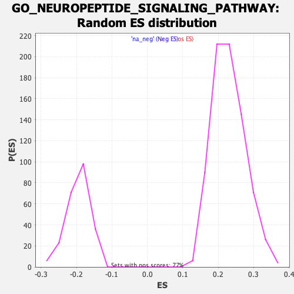

| | | Dataset | CK_basal |
| Phenotype | NoPhenotypeAvailable |
| Upregulated in class | na_pos |
| GeneSet | GO_NEUROPEPTIDE_SIGNALING_PATHWAY |
| Enrichment Score (ES) | 0.4578485 |
| Normalized Enrichment Score (NES) | 1.9946666 |
| Nominal p-value | 0.0 |
| FDR q-value | 0.045282844 |
| FWER p-Value | 0.468 |
Table: GSEA Results Summary
 Fig 1: Enrichment plot: GO_NEUROPEPTIDE_SIGNALING_PATHWAY
Fig 1: Enrichment plot: GO_NEUROPEPTIDE_SIGNALING_PATHWAY
Profile of the Running ES Score & Positions of GeneSet Members on the Rank Ordered List
| SYMBOL | RANK IN GENE LIST | RANK METRIC SCORE | RUNNING ES | CORE ENRICHMENT | | 1 | OPRD1 | 0 | 5.181 | 0.0488 | Yes |
| 2 | NTSR2 | 152 | 2.744 | 0.0669 | Yes |
| 3 | ECEL1 | 295 | 2.528 | 0.0834 | Yes |
| 4 | TENM1 | 337 | 2.476 | 0.1046 | Yes |
| 5 | SSTR1 | 409 | 2.401 | 0.1236 | Yes |
| 6 | NPPB | 508 | 2.299 | 0.1402 | Yes |
| 7 | PENK | 642 | 2.196 | 0.1540 | Yes |
| 8 | UTS2R | 653 | 2.187 | 0.1741 | Yes |
| 9 | QRFPR | 665 | 2.175 | 0.1940 | Yes |
| 10 | OPRL1 | 682 | 2.166 | 0.2136 | Yes |
| 11 | PROKR2 | 754 | 2.111 | 0.2298 | Yes |
| 12 | NPBWR1 | 776 | 2.097 | 0.2485 | Yes |
| 13 | NMB | 878 | 2.038 | 0.2625 | Yes |
| 14 | NPB | 929 | 2.004 | 0.2788 | Yes |
| 15 | NMUR2 | 1188 | 1.890 | 0.2833 | Yes |
| 16 | NPW | 1330 | 1.838 | 0.2934 | Yes |
| 17 | PYY | 1338 | 1.833 | 0.3103 | Yes |
| 18 | SSTR5 | 1567 | 1.762 | 0.3151 | Yes |
| 19 | NXPH3 | 1584 | 1.758 | 0.3309 | Yes |
| 20 | CARTPT | 1704 | 1.718 | 0.3409 | Yes |
| 21 | GPR1 | 1872 | 1.665 | 0.3480 | Yes |
| 22 | SORCS1 | 2009 | 1.623 | 0.3563 | Yes |
| 23 | RXFP4 | 2100 | 1.599 | 0.3667 | Yes |
| 24 | AGRP | 2212 | 1.561 | 0.3757 | Yes |
| 25 | OPRM1 | 2577 | 1.465 | 0.3708 | Yes |
| 26 | NPS | 2632 | 1.454 | 0.3817 | Yes |
| 27 | POMC | 2800 | 1.414 | 0.3864 | Yes |
| 28 | NPFFR1 | 2862 | 1.401 | 0.3965 | Yes |
| 29 | KISS1R | 2965 | 1.378 | 0.4042 | Yes |
| 30 | SSTR4 | 3412 | 1.279 | 0.3933 | Yes |
| 31 | HCRT | 3493 | 1.260 | 0.4010 | Yes |
| 32 | NPPA | 3583 | 1.240 | 0.4081 | Yes |
| 33 | GPR139 | 3590 | 1.238 | 0.4195 | Yes |
| 34 | CYSLTR1 | 3789 | 1.192 | 0.4205 | Yes |
| 35 | TYRO3 | 3886 | 1.175 | 0.4267 | Yes |
| 36 | UCN | 3933 | 1.165 | 0.4353 | Yes |
| 37 | HCRTR1 | 3951 | 1.161 | 0.4453 | Yes |
| 38 | PROK2 | 4228 | 1.109 | 0.4416 | Yes |
| 39 | MCHR2 | 4234 | 1.108 | 0.4517 | Yes |
| 40 | NMUR1 | 4404 | 1.075 | 0.4532 | Yes |
| 41 | PDYN | 4534 | 1.053 | 0.4564 | Yes |
| 42 | TAC3 | 4750 | 1.015 | 0.4549 | Yes |
| 43 | SSTR3 | 4932 | 0.982 | 0.4549 | Yes |
| 44 | PROKR1 | 5051 | 0.961 | 0.4578 | Yes |
| 45 | ADCYAP1 | 5472 | 0.886 | 0.4446 | No |
| 46 | NMU | 5820 | 0.832 | 0.4345 | No |
| 47 | LTB4R | 5872 | 0.824 | 0.4397 | No |
| 48 | NPFFR2 | 5994 | 0.808 | 0.4411 | No |
| 49 | SORL1 | 6137 | 0.786 | 0.4412 | No |
| 50 | PNOC | 6291 | 0.759 | 0.4404 | No |
| 51 | GPR84 | 6330 | 0.753 | 0.4456 | No |
| 52 | NPY | 6497 | 0.728 | 0.4439 | No |
| 53 | NPY5R | 6612 | 0.710 | 0.4447 | No |
| 54 | PMCH | 6888 | 0.667 | 0.4368 | No |
| 55 | NXPH2 | 6894 | 0.665 | 0.4428 | No |
| 56 | MC2R | 7476 | 0.573 | 0.4183 | No |
| 57 | GALP | 7907 | 0.507 | 0.4010 | No |
| 58 | GALR2 | 8245 | 0.454 | 0.3879 | No |
| 59 | RXFP3 | 8255 | 0.452 | 0.3917 | No |
| 60 | NPY2R | 8547 | 0.406 | 0.3805 | No |
| 61 | GPR143 | 8667 | 0.390 | 0.3781 | No |
| 62 | TAC1 | 8690 | 0.386 | 0.3806 | No |
| 63 | MCHR1 | 8802 | 0.369 | 0.3783 | No |
| 64 | GAL | 9311 | 0.286 | 0.3549 | No |
| 65 | GPR83 | 9718 | 0.225 | 0.3361 | No |
| 66 | PTH2 | 10079 | 0.170 | 0.3192 | No |
| 67 | NPSR1 | 10181 | 0.154 | 0.3154 | No |
| 68 | GLRA2 | 10357 | 0.127 | 0.3076 | No |
| 69 | HCRTR2 | 10466 | 0.109 | 0.3031 | No |
| 70 | NXPH4 | 10928 | 0.033 | 0.2796 | No |
| 71 | NPBWR2 | 11112 | 0.005 | 0.2703 | No |
| 72 | NPY1R | 11419 | -0.043 | 0.2549 | No |
| 73 | GPR37 | 11567 | -0.064 | 0.2480 | No |
| 74 | RAPGEF2 | 11643 | -0.076 | 0.2448 | No |
| 75 | NPVF | 11705 | -0.086 | 0.2425 | No |
| 76 | PRLHR | 11816 | -0.104 | 0.2378 | No |
| 77 | NMS | 11865 | -0.113 | 0.2364 | No |
| 78 | SORCS2 | 11965 | -0.128 | 0.2325 | No |
| 79 | CRCP | 12281 | -0.182 | 0.2180 | No |
| 80 | GRPR | 12401 | -0.204 | 0.2138 | No |
| 81 | OPRK1 | 12577 | -0.234 | 0.2070 | No |
| 82 | GALR1 | 12699 | -0.255 | 0.2032 | No |
| 83 | SORT1 | 12784 | -0.270 | 0.2014 | No |
| 84 | GALR3 | 12831 | -0.278 | 0.2016 | No |
| 85 | GPR149 | 13084 | -0.320 | 0.1917 | No |
| 86 | PPY | 13558 | -0.402 | 0.1711 | No |
| 87 | SSTR2 | 13795 | -0.443 | 0.1631 | No |
| 88 | CYSLTR2 | 13803 | -0.445 | 0.1669 | No |
| 89 | GLRA3 | 13971 | -0.473 | 0.1628 | No |
| 90 | NTS | 14111 | -0.498 | 0.1603 | No |
| 91 | SORCS3 | 15082 | -0.692 | 0.1169 | No |
| 92 | NTSR1 | 15318 | -0.741 | 0.1118 | No |
| 93 | PTGDR2 | 15325 | -0.745 | 0.1185 | No |
| 94 | GLRA1 | 15899 | -0.867 | 0.0972 | No |
| 95 | QRFP | 15973 | -0.878 | 0.1017 | No |
| 96 | PCSK1N | 16730 | -1.049 | 0.0726 | No |
| 97 | CALCA | 17382 | -1.225 | 0.0507 | No |
| 98 | GLRB | 17485 | -1.254 | 0.0572 | No |
| 99 | GRP | 17928 | -1.401 | 0.0477 | No |
| 100 | SCG5 | 18778 | -1.797 | 0.0209 | No |
| 101 | CPE | 18872 | -1.854 | 0.0336 | No |
Table: GSEA details [plain text format]

Fig 2: GO_NEUROPEPTIDE_SIGNALING_PATHWAY: Random ES distribution
Gene set null distribution of ES for GO_NEUROPEPTIDE_SIGNALING_PATHWAY